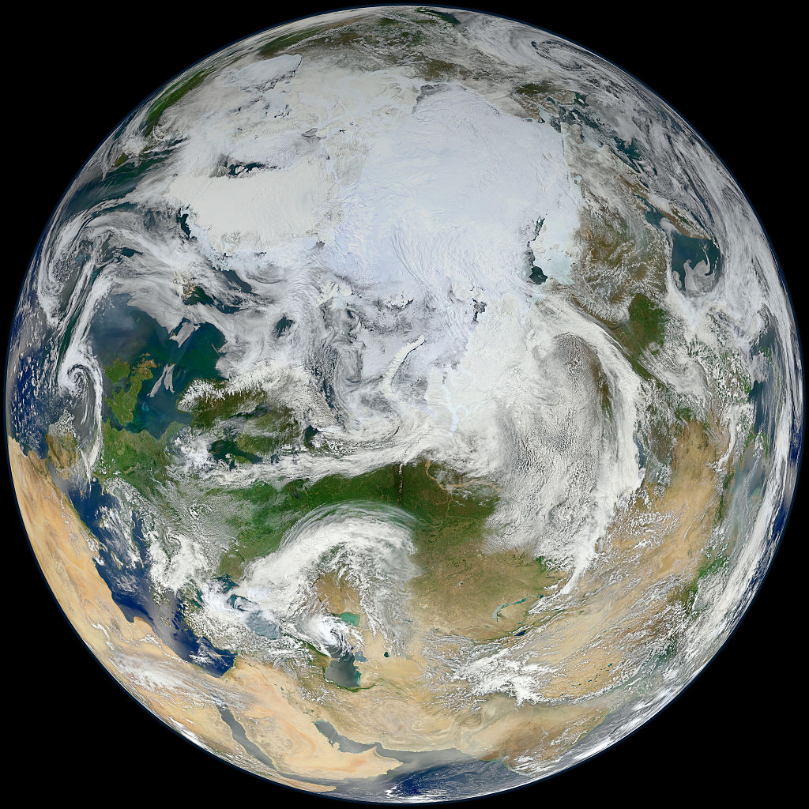

Since the industrial revolution the climate has increasingly been affected
by human activities driving global warming.

These changes are in large part caused by human activities
Global historical CO2 emissions 1758-2018
Published by T. Wang, Dec 4, 2019
The carbon dioxide emissions released by global fossil fuel combustion and industrial processes
have seen a dramatic spike in usage.
Most recently in 2018, the world saw about
36.5 billion metric tons of carbon dioxide emitted.
Carbon Dioxide Emissions
Carbon dioxide is a colorless, naturally occurring gas that is released after people and animals inhale oxygen. It is a greenhouse gas, meaning it absorbs and releases thermal radiation which in turn creates the “greenhouse effect”. In addition to other greenhouse gases, carbon dioxide also is a major contributor to the ability of the Earth to maintain a habitable temperature. Without carbon dioxide and other greenhouse gases, Earth would be too cold to live on. However, while carbon dioxide alone is not a harmful gas, the abundance of it is what causes climate change. The increased use of electricity, transportation, and deforestation in human society, have resulted in the increased emission of carbon dioxide, which in turn raises the earth’s temperature and contributes to climate change.
CO2 in the United States
Between coal, liquids, and natural gas, liquid fuel is expected to be one of the largest contributors of carbon dioxide emissions by 2050. In 2017, China emitted the highest amounts of carbon dioxide in the world, followed by the United States. The sector that emitted the most carbon dioxide in the United States that year was the transportation sector. The carbon dioxide market size in the United States is projected to continue to steadily increase.
If we manage to cap the temperature increase to two degrees Celsius, financial returns for
long-term diversified investors will not be
jeopardized because of investment opportunities
created by the world’s transition to a low-carbon
economy.
Investors can no longer ignore the impact that the world’s changing climate will have on their portfolios, according to a report led by Mercer and supported by IFC, in partnership with Germany’s Federal Ministry for Economic Cooperation and Development
and the UK Department for International Development (DFID).
The report—“Investing in a Time of Climate Change”—assesses investment
exposure to climate risk, estimates the impact on investment returns through
2050, and offers insights on how investors can improve the resilience of their
portfolios.
Estimating the impact of climate change on returns, the report concludes that
climate change will create investment winners and losers, with the energy sector
the most significantly impacted. The coal industry will be the biggest loser, says
the study,
which updates a 2011 report.
The renewable sector, meanwhile, is expected to be the biggest winner. Depending
on the climate scenario that plays out, average annual returns in the coal
sector could fall by 26 percent to 138 percent over the next ten years.
Conversely, average annual returns in the renewables sector could increase
by between 4 percent and 97 percent over the next ten years.
The study shows that effects on returns from climate change are inevitable.
However, if we manage to cap the temperature increase to two degrees Celsius,
financial returns for long-term diversified investors will not be jeopardized
because of investment opportunities created by the world’s transition to
a low-carbon economy.
The research was conducted as a global collaboration, led by Mercer, with input
from 16 asset owners and asset managers (four in US, four in Australia/New Zealand
and eight in Europe), representing more than $1.5 trillion in assets under
management.
Since August 2018, inspired by Greta Thunberg, children and students in at least 270 cities took part in school strikes for climate.
Source: Damian Carrington (4 December 2018). "'Our leaders are like children', school strike founder tells climate summit". The Guardian.
Greta Thunberg :
“Many of you appear concerned that we are wasting valuable lesson time,
but I assure you we will go back to school the moment you start listening to science
and give us a future.”
What about sunrise
What about rain
What about all the things that you said
We were to gain
What about killing fields
Is there a time
What about all the things
That you said were yours and mine
Did you ever stop to notice
All the blood we've shed before
Did you ever stop to notice
This crying Earth, these weeping shores
..
About Earth Song
"Earth Song" is a song by American singer Michael Jackson from his ninth studio album HIStory: Past, Present and Future, Book I. It was released on November 27, 1995 as the third single from the album.